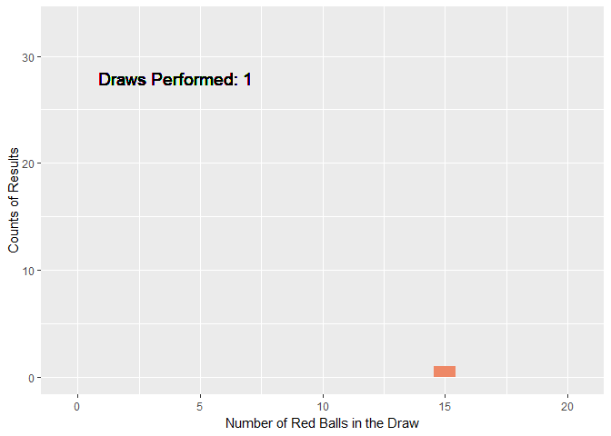

Chapter 3 Common Families of Distributions
3.1 Chapter Notes
This chapter introduces a lot of common distributions. I’m going to try to use R Shiny and animation to illustrate some of them.
Discrete Distributions
Hypergeometric
We have an urn with \(N\) balls, \(M\) of which are red and \(N-M\) green. We draw \(K\) of the balls without replacement. What is the probability that exactly \(X\) of them are red?
\[ \begin{align} P(X= x | N, M, K) = \frac{\binom{M}{x} \binom{N-M}{K-x}}{\binom{N}{K}}, && x = 0, 1, \dots, K \end{align} \]
Where does this formula come from?
The numerator counts the number of ways to choose \(K\) balls such that \(x\) are red. The denominator counts the total number of ways to choose \(K\) red balls.
- There are \(\binom{M}{x}\) ways to choose \(x\) red balls from \(M\) total red ones.
- For each of these ways, there are \(\binom{N-M}{K-x}\) ways to choose the other \(K-x\) balls so that they are all green.
- Multiplying these terms together gives the total number of ways to choose exactly \(x\) red balls from the urn in \(K\) draws.
- We then divide this number by the total number of ways to draw \(K\) balls from the urn, \(\binom{N}{K}\).
Here’s an example. We set up an urn with 100 coloured balls, 70 of them red. We draw 20 of these balls without replacement and mark down how many of them are red. We then put those balls back in the urn and shake it up. We repeat this process a total of 150 times and animate the counts:
N <- 100 # 100 total balls
M <- 70 # 70 red
K <- 20 # We draw 20 balls to count how many are red
reps <- 150 # We repeat this a total of 150 times
# A vector of the 150 results, each a number between 0 and 20 representing the number of red balls drawn.
set.seed(71)
sim_hyp <- rhyper(reps, M, N-M, K)
# Animation requires we have a data frame that contains the distribution of results at each draw 1-150
# So the data frame below is a little convoluted
results_hyp <- tibble(
pos_num_red = rep(0:K,reps),
draw_num = rep(1:reps,each=K+1))%>%
rowwise()%>%
mutate(count_obs = sum(sim_hyp[1:draw_num]==pos_num_red))
plot_hyp <- ggplot(results_hyp)+
geom_col(aes(x = pos_num_red, y=count_obs), fill = tol_light[[4]])+
xlab("Number of Red Balls in the Draw")+
ylab("Counts of Results")+
facet_wrap(~draw_num) # the code required to animate is the same as if we wanted to facet by some variable
anim_hyp <- plot_hyp +
facet_null()+ # but instead of facetting by that variable...
geom_text(x = 4 , y = 28,
aes(label = paste0("Draws Performed: ",as.character(draw_num))),
size = 5)+
transition_states(draw_num, # we include the variable in a gganimate function
transition_length = 3,
state_length = 1)
animate(anim_hyp,nframes=350,fps=20, end_pause = 50)
As we might expected, the most common results we see are those close to \(70/100 \times 20 = 14\) red balls, reflecting the proportion we know are in the urn.
3.2 Questions
Further Reading
The chapter points to the four volumes of
Johnson, N. L., and Kotz, S. (1969-1972). Distributions in Statistics
as a more comprehensive catalogue of statistical distributions, as well as the updated volumes
Johnson, N. L., Kotz, S., and Balakrishnan, N. (1994). Continuous Univariate Distributions, Volume 1
Johnson, N. L., Kotz, S., and Balakrishnan, N. (1995). Continuous Univariate Distributions, Volume 2
Johnson, N. L., Kotz, S., and Kemp, A. W. (1992). Univariate Discrete Distributions